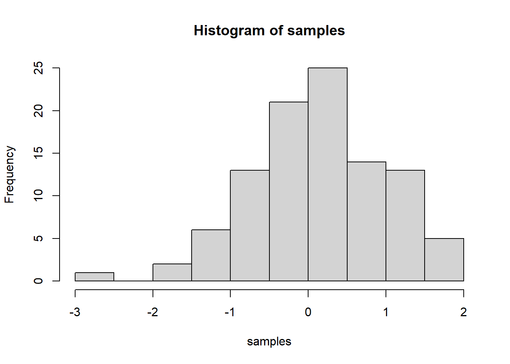

IMPORTANT: You can delete everything in here and start fresh. You might want to start by not deleting anything above this line until you know what that stuff is doing.
This is an .Rmd file. It is plain text with special features. Any time you write just like this, it will be compiled to normal text in the website. If you put a # in front of your text, it will create a top level-header.
Code for first challenge:
Last compiled: 2020-12-06
Notice that whatever you define as a top level header, automatically gets put into the table of contents bar on the left.
You can add more headers by adding more hashtags. These won’t be put into the table of contents
Here’s an even lower level header
Last compiled: 2020-12-06
I’m writing this tutorial going from the top down. And, this is how it will be printed. So, notice the second post is second in the list. If you want your most recent post to be at the top, then make a new post starting at the top. If you want the oldest first, do, then keep adding to the bottom
So far this is just a blog where you can write in plain text and serve your writing to a webpage. One of the main purposes of this lab journal is to record your progress learning R. The reason I am asking you to use this process is because you can both make a website, and a lab journal, and learn R all in R-studio. This makes everything really convenient and in the same place.
So, let’s say you are learning how to make a histogram in R. For example, maybe you want to sample 100 numbers from a normal distribution with mean = 0, and standard deviation = 1, and then you want to plot a histogram. You can do this right here by using an r code block, like this:
samples <- rnorm(100, mean=0, sd=1)
hist(samples)
When you knit this R Markdown document, you will see that the histogram is printed to the page, along with the R code. This document can be set up to hide the R code in the webpage, just delete the comment (hashtag) from the cold folding option in the yaml header up top. For purposes of letting yourself see the code, and me see the code, best to keep it the way that it is. You’ll learn that all of these things and more can be customized in each R code block.
#Code for Second Challenge
## Step 1: Load Packages ---
install.packages("writexl")
library("tidyverse")
library("readxl")
library("writexl")
library(ggplot2)
library(lubridate)
## Step 2: Importing Files ----
bikes_tbl <- read_excel(path = "00_data/01_bike_sales/01_raw_data/bikes.xlsx")
orderlines_tbl <- read_excel(path = "00_data/01_bike_sales/01_raw_data/orderlines.xlsx")
bikeshops_tbl <- read_excel("00_data/01_bike_sales/01_raw_data/bikeshops.xlsx")
## Step 3: Examining Data ----
glimpse(bikes_tbl) #oberservation: Category consists of 3 Categories per row. e.g. "Road - Race - Areorad"
glimpse(orderlines_tbl) #observation: First coloumn was missing a name, hence R added "...1" as a name. Thus it needs some modification
glimpse(bikeshops_tbl) #observation: location is a pair of "City, Bundesland" one might want to make 2 coloumns out of it to tidy it up
## Step 4: Joining Data ----
bike_orderlines_joined_tbl <- orderlines_tbl %>%
left_join(bikes_tbl, by = c("product.id" = "bike.id")) %>%
left_join(bikeshops_tbl, by = c("customer.id" = "bikeshop.id"))
glimpse(bike_orderlines_joined_tbl)
## Step 5: Wrangling Data ----
bike_orderlines_wrangled_tbl <- bike_orderlines_joined_tbl %>%
## Step 5.1: Separate category into its 3 subcategories
separate(col = category, into = c("category.1","category.2","category.3"), sep = " - ")%>%
## Step 5.2: Add coloumn for total price of an order line
mutate(total.price = price * quantity) %>%
## Step 5.3: Delete the unnecessary coloumns, ...1, gender, latitude and longitude
select(-...1, -gender, -lat, -lng) %>%
## Step 5.4: Split location into city and state
separate(col = location, into = c("city", "state"), sep = ", ") %>%
## Step 5.5: Rename "name" to "bikeshop" and replace all "." in coloumn identifiers with "_"
rename(bikeshop = name) %>%
set_names(names(.) %>% str_replace_all("\\.", "_"))
## Step 6: Manipulating Data ----
##Sales by states, some of the intermediate commands are unneccessary (since the associated coloumns get deleted by group and summarize)
##but only kept within code for the sake of completness
sales_by_state_tbl <- bike_orderlines_wrangled_tbl %>%
select(order_date, total_price, city, state) %>%
mutate(year = year(order_date)) %>%
group_by(state) %>%
summarize(sales=sum(total_price)) %>%
mutate(sales_text = scales::dollar(sales, big.mark = ".",
decimal.mark = ",",
prefix = "",
suffix = " €")) %>%
arrange(sales)
sales_by_state_tbl
sales_by_state_tbl %>% ggplot(aes(x=state,y=sales))+geom_col(fill = "#2DC6D6") +
geom_label(aes(label = sales_text)) +
scale_y_continuous(labels = scales::dollar_format(big.mark = ".",
decimal.mark = ",",
prefix = "",
suffix = " €"))+
labs(
title = "Revenue by state",
subtitle = "States in alphabetical order",
x = "", # Override defaults for x and y
y = "Revenue"
)+ theme(axis.text.x = element_text(angle = 45, hjust = 1))
##sales by states and year
sales_by_state_and_year_tbl <- bike_orderlines_wrangled_tbl %>%
select(order_date, total_price, city, state) %>%
mutate(year = year(order_date)) %>%
group_by(state,year) %>%
summarize(sales=sum(total_price)) %>%
mutate(sales_text = scales::dollar(sales, big.mark = ".",
decimal.mark = ",",
prefix = "",
suffix = " €"))
sales_by_state_and_year_tbl %>%
ggplot(aes(x = year, y = sales, fill = state)) +
geom_col() +
facet_wrap(~ state) +
scale_y_continuous(labels = scales::dollar_format(big.mark = ".",
decimal.mark = ",",
prefix = "",
suffix = " €")) +
labs(
title = "Revenue by year and state",
subtitle = "Urban regions, except for Berlin, have an upward trend",
fill = "State"
)
## Step 7 Writing Files ----
## Step 7.1 Excel
bike_orderlines_wrangled_tbl %>%
write_xlsx("00_data/01_bike_sales/02_wrangled_data/bike_orderlines_challenge.xlsx")
## Step 7.2 CSV
bike_orderlines_wrangled_tbl %>%
write_csv("00_data/01_bike_sales/02_wrangled_data/bike_orderlines_challenge.csv")
## Step 7.3 RDS
bike_orderlines_wrangled_tbl %>%
write_rds("00_data/01_bike_sales/02_wrangled_data/bike_orderlines_challenge.rds")# WEBSCRAPING – Chapter 3 Challenge----
# 1.0 LIBRARIES ----
library(tidyverse) # Main Package - Loads dplyr, purrr, etc.
library(rvest) # HTML Hacking & Web Scraping
library(xopen) # Quickly opening URLs
library(jsonlite) # converts JSON files to R objects
library(glue) # concatenate strings
library(stringi) # character string/text processing
library(httr)
library(keyring)
#A first task (API)
# A2.0 Setup Data Retrieval from API----
#A2.1Define Key and load it----
keyring::key_set("token")
key_get("token")
#A2.2 Get Monthly XRP-USD Price from alphavantage ----
alphavantage_api_url <- "https://www.alphavantage.co/query"
ticker <- "XRPUSD"
xrp_usd_json <- GET(alphavantage_api_url, query = list('function' = "TIME_SERIES_MONTHLY_ADJUSTED",
symbol = ticker,
apikey = key_get("token"))
)
#A2.3 Convert the Json Data into Tibble----
xrp_usd_r<- xrp_usd_json %>%
.$content %>%
rawToChar() %>%
fromJSON(flatten=T) %>%
bind_rows() %>%
as_tibble() %>%
#Delete the first 4 coloumns since the don't contain useful info
select(-starts_with("1."), -starts_with("2."), -starts_with("3."), -starts_with("4.") ) %>%
#delete null rows
drop_na() %>%
# tibble has now 7 coloumns, drop the last one, since last one is for dividend and XRP doesn't have divididends
slice(1:6)
#A2.4 Tidy up the Tibble even more----
#up til now each coloumn is one day and the rows contain Open, High, Low, Close, Adjusted Close and Volume in that Order (from Top to Bottom)
#so slice them up to create subtitles and pivot them
xrp_usd_r_open <- xrp_usd_r %>% slice(1) %>% pivot_longer(cols = c(names(.)[1:70]),
names_to = "Date",
values_to = "Open")
xrp_usd_r_high <- xrp_usd_r %>% slice(2) %>% pivot_longer(cols = c(names(.)[1:70]),
names_to = "Date",
values_to = "High")
xrp_usd_r_low <- xrp_usd_r %>% slice(3) %>% pivot_longer(cols = c(names(.)[1:70]),
names_to = "Date",
values_to = "Low")
xrp_usd_r_close<- xrp_usd_r %>% slice(4) %>% pivot_longer(cols = c(names(.)[1:70]),
names_to = "Date",
values_to = "Close")
xrp_usd_r_adjusted_close<- xrp_usd_r %>% slice(5) %>% pivot_longer(cols = c(names(.)[1:70]),
names_to = "Date",
values_to = "Adjusted Close")
xrp_usd_r_adjusted_volume<- xrp_usd_r %>% slice(6) %>% pivot_longer(cols = c(names(.)[1:70]),
names_to = "Date",
values_to = "Volume")
#join now the tidy (pivoted) subtibbles together to have Open, High etc. as coloumns
xrp_usd_r_tidy <- xrp_usd_r_open %>% left_join(xrp_usd_r_high,by = c("Date" = "Date")) %>%
left_join(xrp_usd_r_low,by = c("Date" = "Date")) %>%
left_join(xrp_usd_r_close,by = c("Date" = "Date")) %>%
left_join(xrp_usd_r_adjusted_close,by = c("Date" = "Date")) %>%
left_join(xrp_usd_r_adjusted_volume,by = c("Date" = "Date")) %>%
view()# WEBSCRAPING – Chapter 3B Challenge----
# 1.0 LIBRARIES ----
library(tidyverse) # Main Package - Loads dplyr, purrr, etc.
library(rvest) # HTML Hacking & Web Scraping
library(xopen) # Quickly opening URLs
library(jsonlite) # converts JSON files to R objects
library(glue) # concatenate strings
library(stringi) # character string/text processing
library(httr)
url<- "https://www.rosebikes.de/fahrr%C3%A4der/rennrad"
xopen(url)
html <- read_html(url)
#2.2 Get Model Data ----
bike_tbl_model <- html %>%
html_nodes(css = ".catalog-category-bikes__title") %>%
html_text("catalog-category-bikes__title-text") %>%
enframe(name = "position", value = "model")
#2.2 Get Price Data ----
bike_tbl_price <- html %>%
html_nodes(css = ".catalog-category-bikes__price") %>%
html_text("catalog-category-bikes__price-title") %>%
stringr::str_extract(pattern = "(?<=ab ).*" ) %>%
stringr::str_replace_all(pattern = "€", replacement = "") %>%
stri_trim_right() %>%
# Make all values numeric
stringr::str_replace_all(pattern = "\\.", replacement = "") %>%
stringr::str_replace_all(pattern = ",", replacement = ".") %>%
as.numeric() %>%
enframe(name = "position", value = 'price_in_EUR') #%>% view()
#bike_tbl_price%>%pull(`price_in_EUR`)
#bike_tbl_price %>% summarise(Gesamt = sum(price_in_EUR))
#2.3 Merge both tables
bike_tbl <- bike_tbl_model %>% left_join(bike_tbl_price)
#bike_tbl states base bike subcategory prices, but each subcategory has specific models so those are to be scraped aswell.#Ch4 Challenge----
#1 Load packages----
# Tidyverse
library(tidyverse)
library(vroom)
# Data Table
library(data.table)
#2 Data import----
col_types_assignee <- list(
id = col_character(),
type = col_integer(),
name_first = col_character(),
name_last = col_character(),
organization = col_character()
)
assignee_tbl <- vroom(
file = "assignee.tsv",
delim = "\t",
col_types = col_types_assignee,
na = c("", "NA", "NULL")
)
class(assignee_tbl)
#patent assigne
col_types_patent_assignee <- list(
patent_id = col_character(),
assignee_id = col_character(),
location_id = col_character()
)
patent_assignee_tbl <- vroom(
file = "patent_assignee.tsv",
delim = "\t",
col_types = col_types_patent_assignee,
na = c("", "NA", "NULL")
)
class(patent_assignee_tbl)
# 3.1 Acquisition Data ----
setDT(assignee_tbl)
class(assignee_tbl)
setDT(patent_assignee_tbl)
class(patent_assignee_tbl)
#4 Merge----
combined_data <- patent_assignee_tbl %>%
left_join(assignee_tbl, by = c("assignee_id" = "id"))
setkey(combined_data, "assignee_id")
key(combined_data)
# Create New Data Table for the 10 US companies with the most patents
top_10_patent <- combined_data[!is.na(organization), .N, by = organization][order(-N)][1:10]
setnames(top_10_patent, "N", "Number of Patents")
top_10_patent %>% glimpse()
#Side Info: Only 1 patent id without any orginazion or person assigned to it
combined_data[is.na(assignee_id)]
#2nd subtask Repeat previous steps
col_types_patent <- list(
id = col_character(),
type = col_character(),
number = col_character(),
country = col_character(),
date = col_date("%Y-%m-%d"),
abstract = col_character(),
title = col_character(),
kind = col_character(),
num_claims = col_double(),
filename = col_character(),
withdrawn = col_double()
)
patent_tbl <- vroom(
file = "patent.tsv",
delim = "\t",
col_types = col_types_patent,
na = c("", "NA", "NULL")
)
setDT(patent_tbl)
class(patent_tbl)
patent_tbl %>% filter(country != 'US') # AS we can see all patensts were granted in the US (returns 0 rows)
# Dropping some variables (for this task actually even more variables could have been dropped)
patent_slim_tbl <- patent_tbl %>% select(id, number, date, num_claims, withdrawn, kind, title) %>%
#adding year coloumn to filter (actually not necessary but I don't like overly nested commands)
mutate(year = year(date)) %>%
# Filter for year 2019 (deletes rows that are not from 2019)
filter(year == 2019)
patent_slim_tbl %>% dim()
patent_combined_2019<-patent_slim_tbl %>% left_join(combined_data, by= c("number" = "patent_id"))
#Some Patents are assigned to multiple organisations e.g. paten_id: 10174115 is assigned, to unviersite paris-sud, aix-Marseille (and some more)
patent_combined_2019 %>% group_by(number) %>% summarise(count = n(), organization) %>% ungroup() %>%
arrange(desc(count)) %>% slice(10:17)
top_10_patent_2019<-patent_combined_2019 %>% filter(!is.na(organization)) %>% group_by(organization) %>% summarise(count = n(), organization) %>% ungroup() %>%
arrange(desc(count)) %>% unique()%>% slice(1:10)
top_10_patent_2019 %>%glimpse()